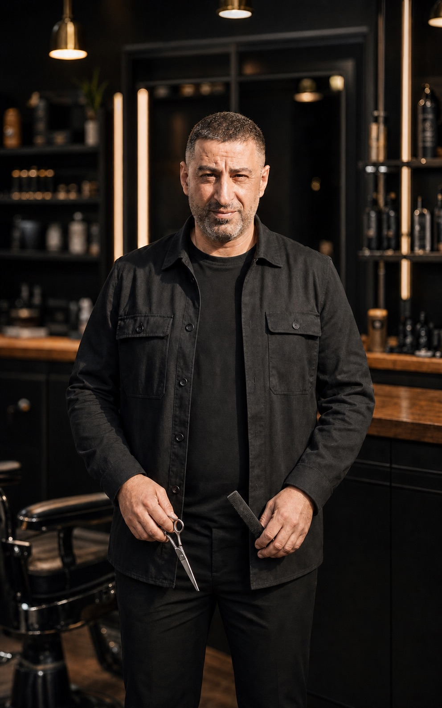
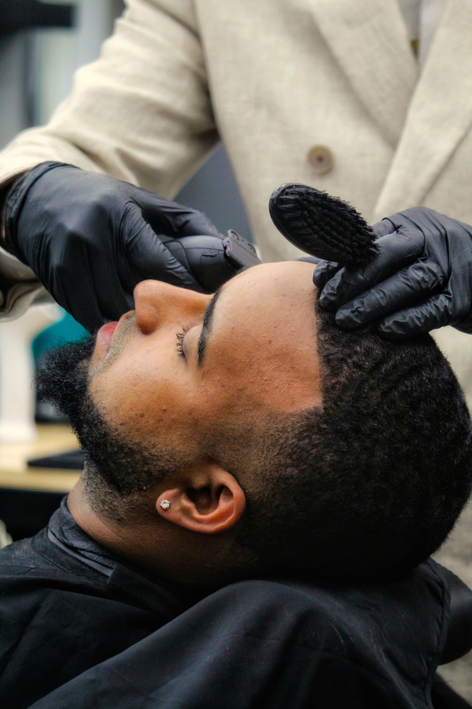
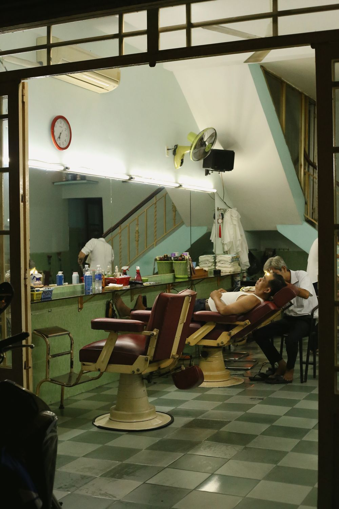

Links Samir · Mitte Karim · Vorne Samir (Inhaber)Fotoentwürfe auf Basis der gelieferten Personen- und Salonbilder · Bildrechte vor Veröffentlichung bestätigen.
Cuts & Styles · Mosbach
Dein Friseur. Dein Look.
Finde den Friseur, der zu deinem Look passt. Deinen Termin buchst du danach direkt online.
Samir als Inhaber steht vorne, Karim in der Mitte und Mitarbeiter Samir links. Jeder bekommt ein eigenes professionelles Porträt. Die fachlichen Schwerpunkte bleiben Vorschläge und werden im Teamgespräch bestätigt.
Teamvisualisierung Die Porträts basieren auf gelieferten Fotos und sind professionell bearbeitete Konzeptbilder.

Fotoentwurf
Mitarbeiter · Profilentwurf
Samir
Samirs Profil steht im Entwurf für saubere Übergänge, klare Konturen und einen ruhigen Terminablauf.
Samir wird im Entwurf als Inhaber geführt; Karim und der zweite Samir als Mitarbeiter. Schreibweise, Rollen, Stärken und Bildfreigaben werden vor dem Livegang bestätigt.
03
Mitarbeiter
01
klarer Kalender
00
unnötige Warteschlangen
So einfach geht's
Drei Schritte. Dann sitzt du.
Keine Anrufschleife, kein Raten, keine volle Sitzbank. Der Kalender zeigt nur Zeiten, die zur gewählten Leistung, deinem Friseur und dem Arbeitsplatz passen.

01
Leistung wählen
Haarschnitt, Bartpflege oder Komplettservice – wähle, was zu deinem Look passt.
02
Friseur wählen
Lerne das Team kennen und entscheide, wer deinen Look übernimmt.
03
Zeit reservieren
Freie Uhrzeit auswählen, Daten eingeben und Termin direkt bestätigen.
Terminplaner · Prototyp
Probier den neuen Ablauf.
Diese Demo zeigt, wie Kunden künftig buchen. Sie speichert nichts und löst keine Reservierung aus.
Leistungen · Vorschlag
Klar wählen. Passend planen.
Die Kategorien sind ein Startpunkt für das Gespräch. Preise, Dauer und genaue Inhalte werden nicht erfunden, sondern vom Salon bestätigt.
01 · Cut
Haarschnitt
Beratung, Schnitt und Styling – Dauer und Preis werden gemeinsam festgelegt.
02 · Beard
Bartpflege
Form, Kontur und Pflege als eigene buchbare Leistung – Details noch offen.
03 · Complete
Schnitt & Bart
Ein kombinierter Termin mit ausreichend Zeit, ohne doppelte Wartephase.
04 · Young
Kids & Teens
Als mögliche Kategorie vorgemerkt; Altersgrenzen und Ablauf werden bestätigt.

Bearbeiteter Ladenentwurf
Der Laden · CLEAN CUT
Holz. Schwarz. Dein Style.
Die echte Theke und das vorhandene Logo geben der Website ihren eigenen Charakter. Das WhatsApp-Video wird nicht veröffentlicht; diese bereinigte Ansicht dient nur als Konzept für eine spätere Salon-Galerie.
Originalfoto, Logo- und Produktrechte vor Veröffentlichung bestätigen.
QR am Eingang
Scannen. Termin sehen. Wiederkommen.
Der QR-Code führt direkt auf die kurze Terminseite. Im Salon kann der bestätigte Kunde später zusätzlich mit „Ich bin da“ einchecken.
Am Schaufenster – auch außerhalb der Öffnungszeiten
Am Spiegel – nächsten Termin direkt sichern
Auf Karten – ohne Telefonnummer abtippen
Direkt zur Termin-Demo
Finale Domain und QR vor Druck gemeinsam bestätigen.
NUR FÜR MITARBEITER UND INHABER Private Dashboard-Demo · Beispieldaten · keine Speicherung
Interne Salonübersicht
Jeder sieht, was wichtig ist.
Diese Übersicht ist nur in der privaten Konzeptvorschau sichtbar. Auf der späteren Kunden-Homepage wird sie entfernt und ist nur nach Anmeldung erreichbar.